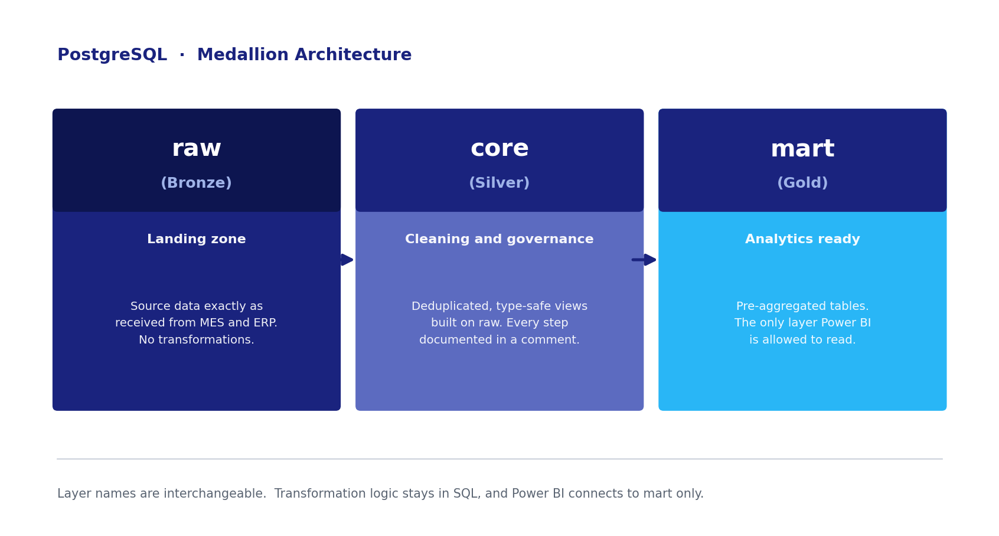
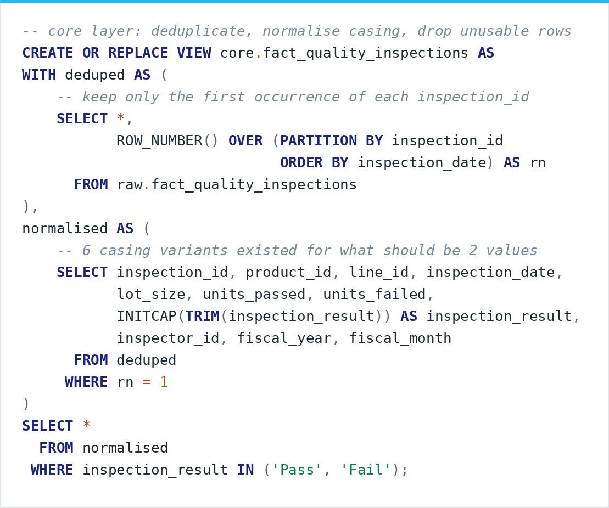
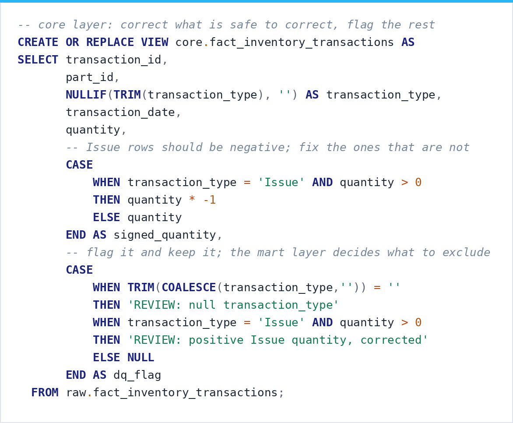
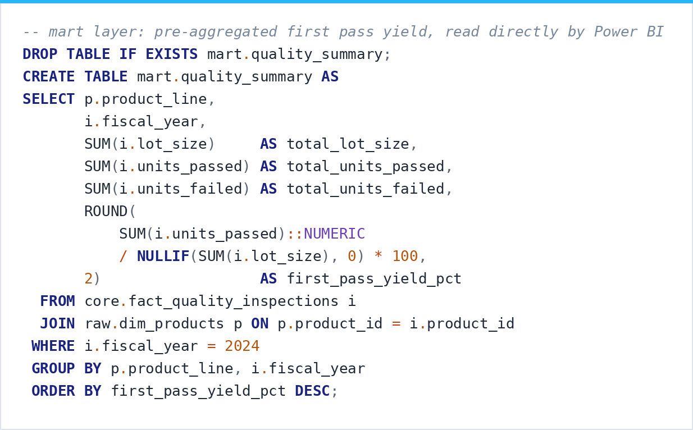
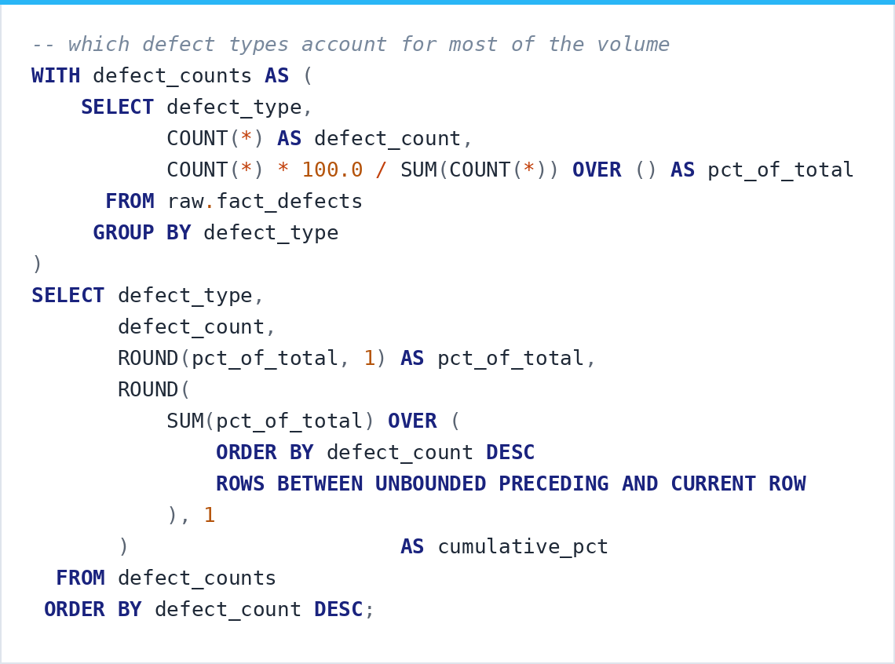
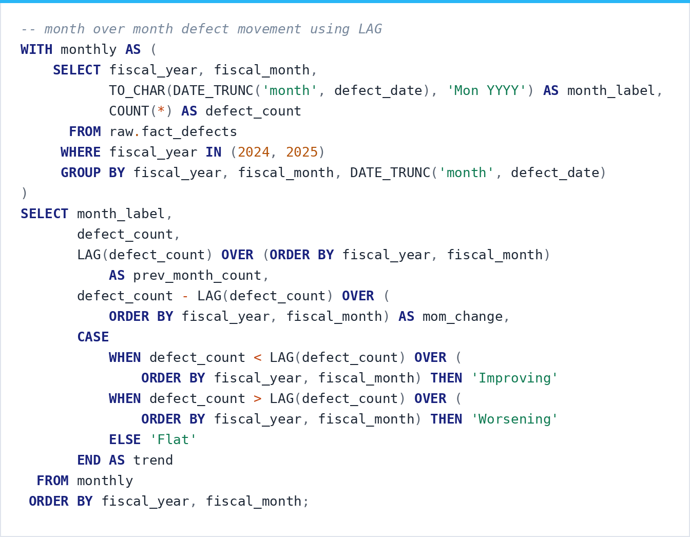

SQL
Transformation and Cleaning in PostgreSQL
SQL is where most of the actual work happens in anything I build. Cleaning, reshaping, joining, and getting data into a structure that reporting can sit on top of. The queries shown on this tab are PostgreSQL. The pattern stays the same regardless of the project: profile the data first so you know what is wrong with it, then transform it deliberately and document why each step exists.
Operations Analytics Platform
PostgreSQL · Three-Schema Medallion Architecture
Manufacturing quality and supply chain data arrives as exports from MES and ERP systems, which means it shows up in whatever shape the source system felt like producing. I built a three-schema medallion architecture in PostgreSQL to handle it. Raw holds source data exactly as received, core holds cleaned and type-safe views built on top of raw, and mart holds the aggregated tables Power BI reads. Each layer has one job, and that separation keeps all the transformation logic in SQL where it can be reviewed.

The source data covered eight tables across both domains: product, supplier, production line, and part dimensions alongside quality inspection, defect, inventory transaction, and purchase order facts. Before writing a single transformation I profiled all of them for duplicates, nulls, mixed values, and orphaned keys.

Core layer. Deduplication through ROW_NUMBER, casing normalized with INITCAP. Six casing variants existed for what should have been two values, and 25 duplicate inspection records had to come out before any yield calculation could be trusted.

The judgment call in any cleaning job is deciding what to correct and what to leave visible. Issue rows carrying positive quantities get corrected because that is a known sign error. Everything else questionable gets a dq_flag and stays in the table, so the mart layer decides what to exclude and the operational signal survives.

Mart layer. First pass yield pre-aggregated by product line, with NULLIF guarding the division. These are tables rather than views because the aggregation cost is high and the data refreshes daily. Power BI reads this layer directly and never touches raw or core.

A window function over the full result set gives each defect type its share, and a running total shows how few types account for most of the volume. This is the query that tells an operations team where to spend their attention first.

LAG across fiscal periods turns a flat count into a trend, with the direction labeled in the query itself. Doing that work in SQL means the report arrives already interpreted.
The query that mattered most joined defect data back to supplier performance. Late-arriving parts from Tier 2 suppliers lined up with higher defect rates on the production lines they fed. That is the kind of finding that turns a data platform into a tool people make decisions with.
Foundational SQL Work
Earlier builds where the fundamentals got worked out
Data Cleaning · Nashville Housing
Taking a messy property dataset with missing values, inconsistent formatting, and duplicate records, and getting it into a state where analysis is possible.


Data Transformation · Covid-19
Transforming and joining WHO datasets to track how infections, deaths, and mortality rates moved across countries and continents over time.